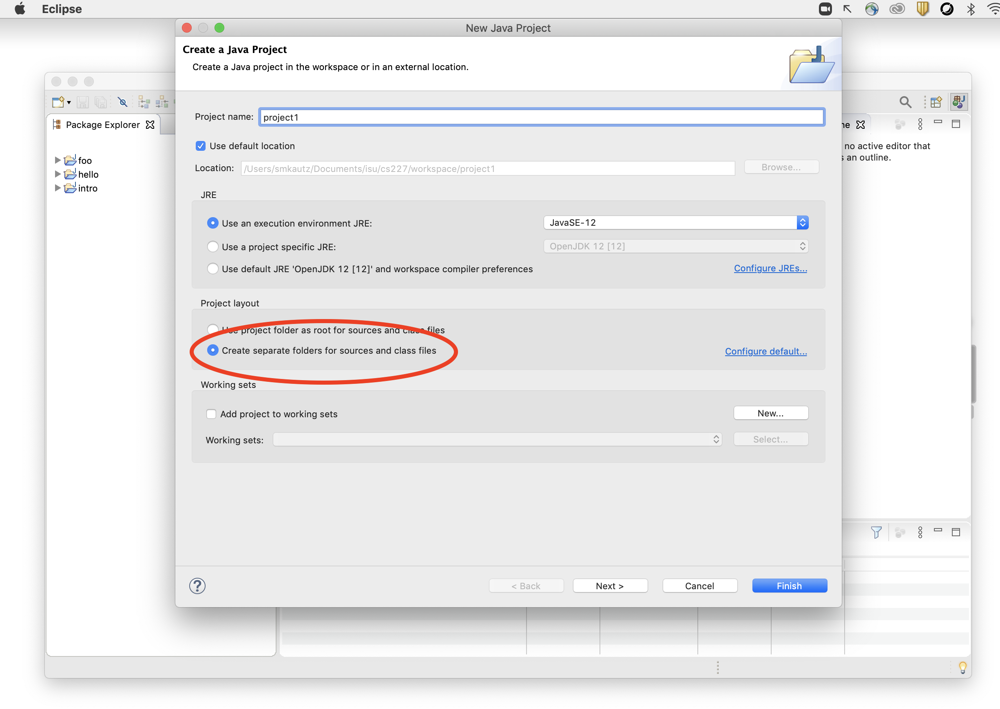
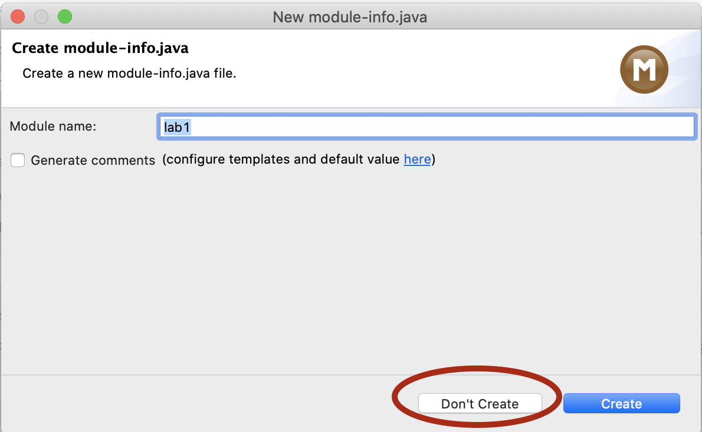

Creating a Project
Now, we will create a project. Eclipse organizes all your Java classes into independent projects. You will normally create a new project for each lab and each assignment; you can also create additional projects for experimentation.
To create your project:
- Go to File -> New -> Java Project
- Enter "project1" as the name of the project.
- Be sure the option "Create separate folders for sources and class files" is checked (see screenshot below), then hit Finish.

- At the next dialog ("Create module-info.java") click Don't Create.

The project should appear in Eclipse's Package Explorer (normally on the left side of the screen). Expand it and confirm that you see a src folder.

If you lose the Package Explorer
There are many possible "panes" such as Package Explorer that can be opened within a workspace, but Package Explorer is one that you will always need. This is what allows you to navigate within all the files within all your projects. If your workspace gets messed up and you need to find it again, here's how.- First, for the sake of experimentation, delete the Package Explorer by clicking the "X" on its tab
- Then, go to Window -> Show View -> Package Explorer
- Be sure you select the Package Explorer, NOT the "Project Explorer" (which is similar-looking, but essentially useless for us).
- If you don't like it on the left side, you can move it around!
- Try moving it to the right. Then go to Window -> Perspective -> Reset Perspective. This puts the workspace back to the defaults for the layout called the "Java Perspective"